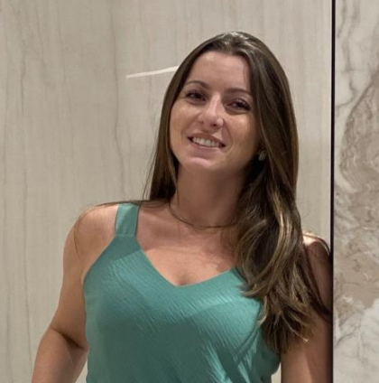

Contato
(48) 9 9941-4351
byancafurlaarq@gmail.com
www.linkedin.com/in/byancafurlan
Certificações
Inteligência Emocional
AUTOCAD
Liderança
Lumion
SKETCHUP
Produtividade Inteligente
Principais competências
AUTOCAD
SKETCHUP
LAYOUT
VRAY
Byanca Furlan
Estudante de Análise e Desenvolvimento de Sistemas com experiência em Arquitetura de Interiores
em busca de oportunidades de crescimento e aplicação prática de conhecimentos.
Resumo
Me chamo Byanca, sou formada em Arquitetura e Urbanismo com MBA em Gestão de Obras e Projeto. Atualmente estou em fase de transição de carreira, com isso iniciei uma nova graduação em Análise e Desenvolvimento de Sistemas, retomando estudos feitos na época do Ensino Médio com curso Técnico de Programação. Além de experiências com Projetos Arquitetônicos e de Interiores, em todos os processos e etapas de desenvolvimento, tenho experiência com atendimento aos clientes, organização de documentos, processos internos de escritório. Além de competências desenvolvidas tanto pessoal quanto profissional com cursos rápidos de liderança e inteligência emocional. Busco crescimento profissional, oportunidade de iniciar esse novo ramo do mercado de trabalho e aprimorar conhecimentos já adquiridos, além de poder contribuir com competências já desenvolvidas. poder contribuir com competências já desenvolvidas.
Experiência Profissional
Cargo: Arquiteta
Empresa: Byanca Furlan Arquitetura
Descrição: Arquiteta especialista em Projeto de Interiores.
Experiência
b+m Arquitetas
Arquiteta
abril de 2021 - atual (3 anos e 2 meses)
Palhoça, Santa Catarina, Brasil
-----------------
Autônoma
Arquiteta
janeiro de 2018 - atual (6 anos)
Palhoça, Santa Catarina, Brasil
-----------------
HAU Arquitetura e Interiores
Desenhista Projetista de Arquitetura
jul. de 2015 - dez. de 2017 2 anos 6 meses
Palhoça, Santa Catarina, Brasil
________
Formação Acadêmica
Instituição: FMP
Curso Superior de Tecnologia (CST), ANÁLISE E DESENVOLVIMENTO DE SISTEMAS · (janeiro de 2024 - julho de 2026)
-----------------
Curso: Arquitetura e Urbanismo
Instituição: UDESC
Ano de Conclusão: 2015
________